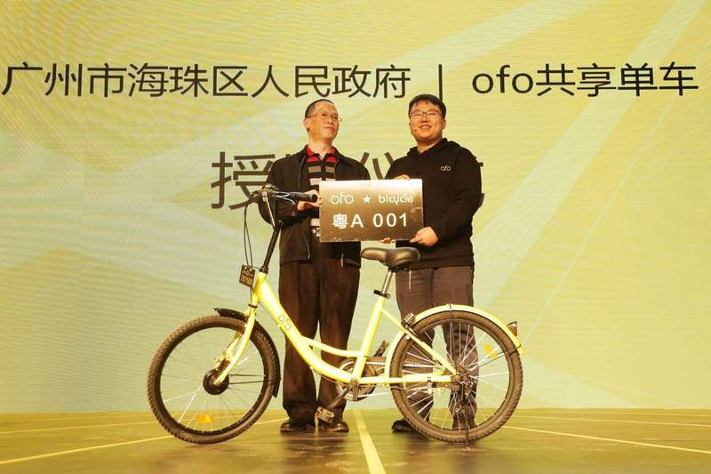

ofo 正式进入广州，与广州海珠区政府开展战略合作，计划年内连接6万辆自行车
今天，ofo在广州召开城市战略发布会，宣布正式登陆广州，将与广州市海珠区人民政府建立战略合作，年内连接6万辆自行车。
海珠区政府计划在辖区内各地铁站点、公交站点、居民区、商业区、公共服务区等周边区域划设自行车停车位，供ofo共享单车等自行车停放，三期预计将完成1200个自行车停车位。随后，海珠区政府授予ofo一个编号为“粤A001”的ofo定制车牌，欢迎ofo正式进入广州。
在未来，海珠区政府将推动ofo共享单车与海珠区高等院校和大数据、物联网等相关行业企业开展技术支持和合作。
ofo在广州投放的单车为全新升级的ofo3.0版本，新一代小黄车使用了实心胎、三角型把立、可调节座椅、前后双抱刹系统等，在安全性、耐用性、功能性、设计感上都有提升，同时降低了维护成本。
ofo联合创始人杨品杰介绍，目前ofo已在广州已经连接万余量单车，之后ofo表示还将以共享平台的方式连接更多单车，这也是继在北京、上海开启“城市大共享”计划之后，ofo共享单车在广州推出的“城市大共享”计划。
“城市大共享”自11月17号宣布实施，，吸纳用户共享出来的闲置自行车，通过上门收车、升级改造、投入使用来将自行车连接起来。共享自行车的用户会获得共享单车现金奖励或一定期限的共享单车免费使用权，先期ofo计划在北京上海推出，随后推行到全国。
具体来说，ofo会根据不同片区用户的共享需求进行上门收车的服务，选择符合共享标准的单车予以采纳，杨品杰透露，目前参与单车共享的用户以年轻人及居多，先期分享的单车主要来自城市白领、自行车发烧友及高校学生，用户共享的自行车以普通自行车居多，也有其他类型。据透露，ofo计划在年底连接100万辆车，目前已经连接了20万辆。
杨品杰表示，随着相关筹备工作的落地，ofo将很快设立城市集中收车点，采用定点收车及上门收车两种方式推动“城市大共享”进行。而随着面向企业（700Bike等）和用户的连接加共享计划的展开，ofo对自身的定位也在变清晰，即做平台，从这个意义上来讲，ofo与其投资方滴滴思路一致。但自行车的共享（更细碎、客单价更低，维护需要平台）和汽车共享（客单价高，车主自身承担维护工作）还不一样，ofo打法收效如何，我们也将继续保持关注。